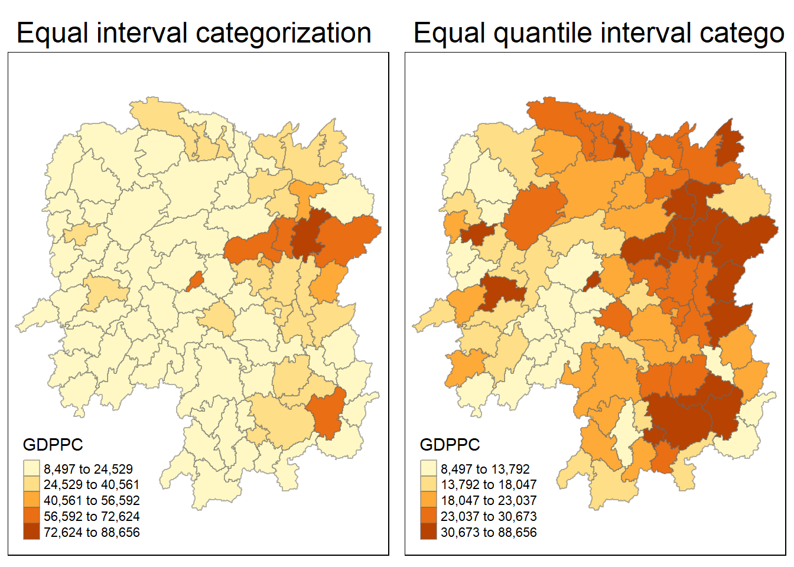
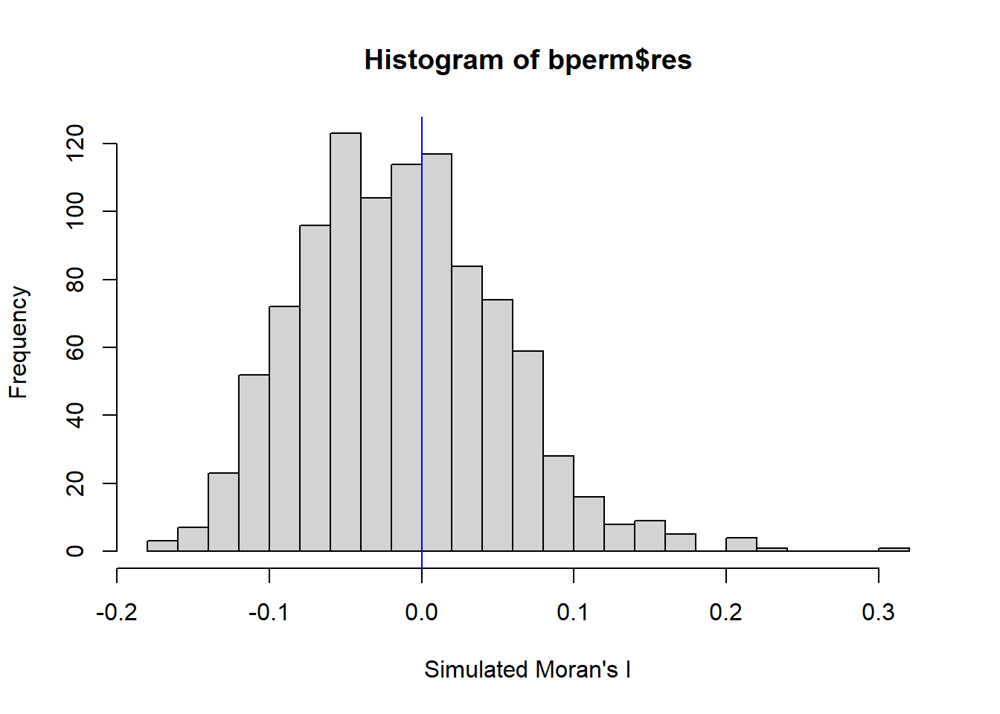
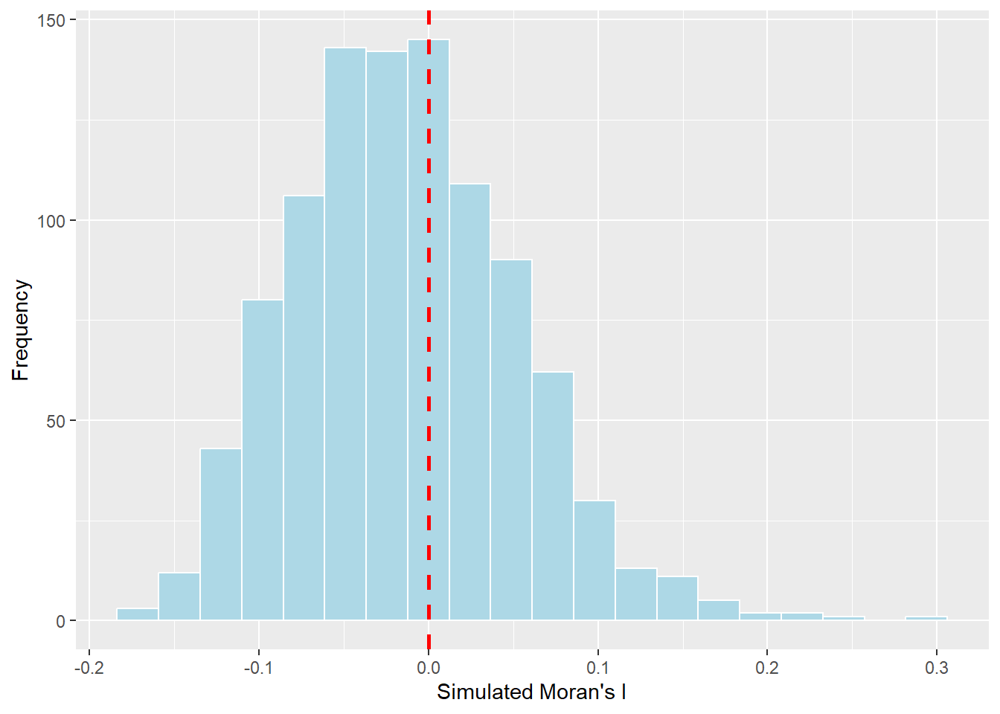
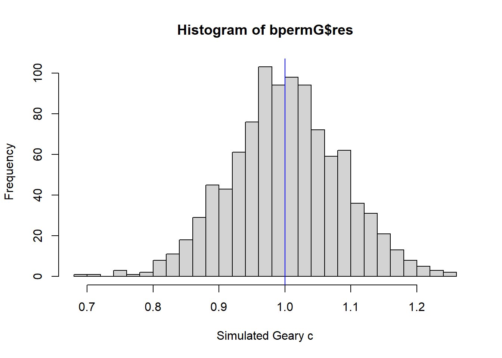
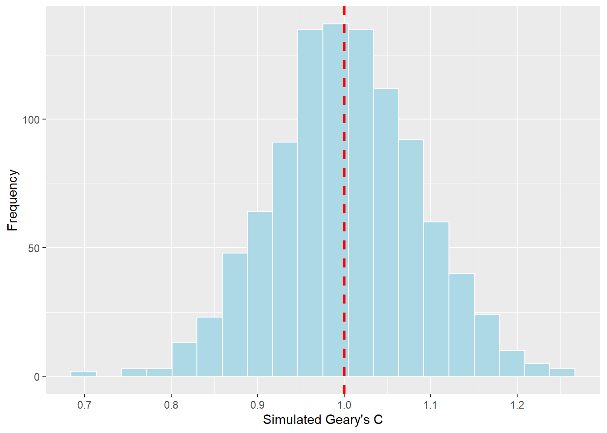
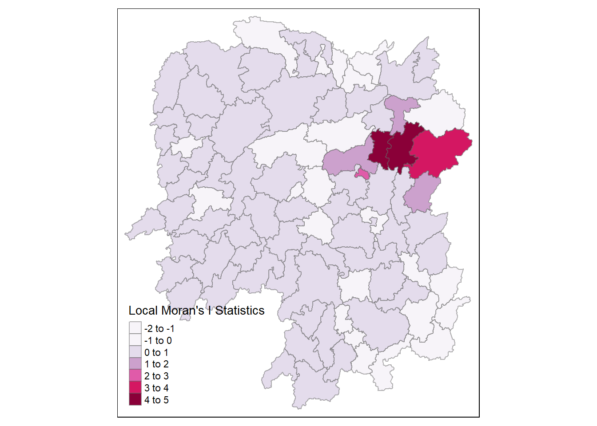
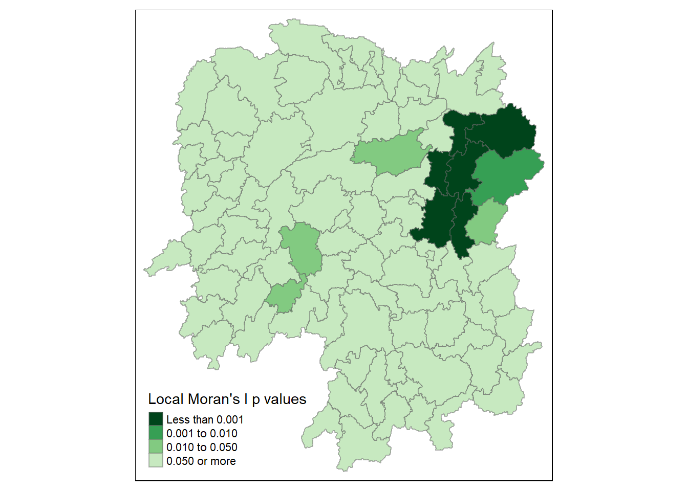
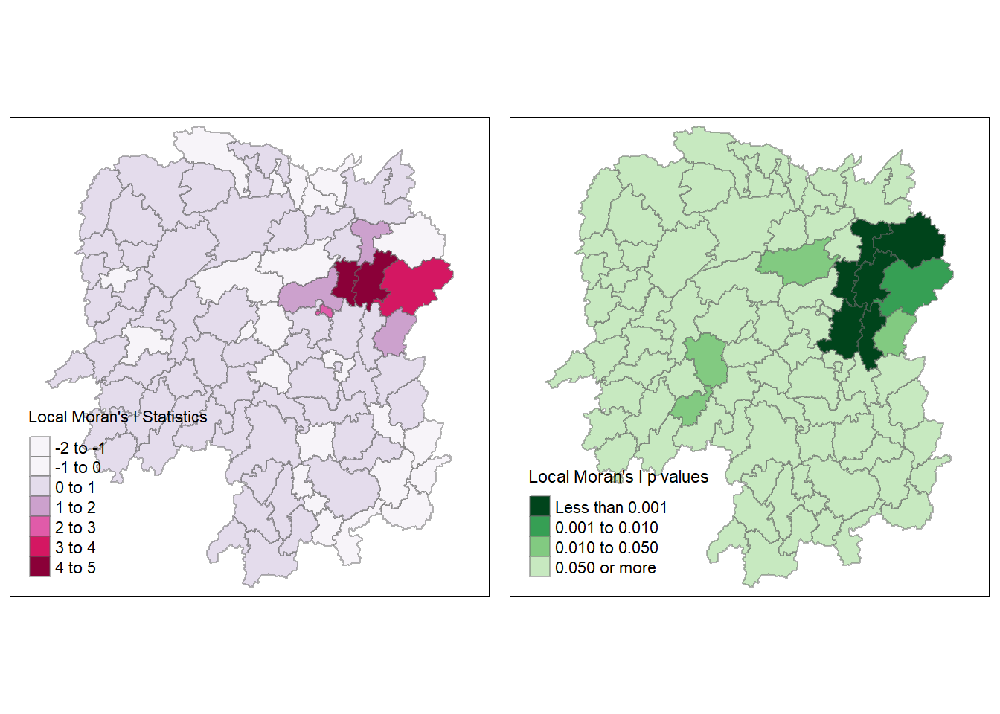
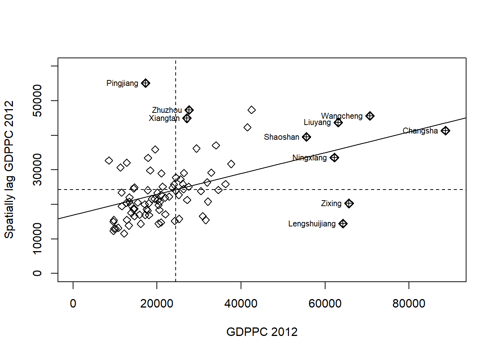

pacman::p_load(sf,tidyverse,spdep, tmap)Hands On Exercise 2.1 - Global and Local Measures of Spatial Autocorrelation
Overview
Hands On Exercise 3 - Global and Local Measures of Spatial Autocorrelation
In this hands-on exercise, we explore how to compute Global and Local Measure of Spatial Autocorrelation (GLSA) by using spdep package.
Getting Started
The code chunk below install & load sf, spdep, tmap & tidyverse packages into the R env
Importing Hunan Geospatial sf
hunan_sf = st_read(dsn="data/geospatial", layer="Hunan")Reading layer `Hunan' from data source
`D:\Allanckw\ISSS624\Hands-on_Ex3\data\geospatial' using driver `ESRI Shapefile'
Simple feature collection with 88 features and 7 fields
Geometry type: POLYGON
Dimension: XY
Bounding box: xmin: 108.7831 ymin: 24.6342 xmax: 114.2544 ymax: 30.12812
Geodetic CRS: WGS 84Loading Hunan 2012 Aspatial File in CSV
hunan_GDP = read_csv("data/aspatial/hunan_2012.csv")Rows: 88 Columns: 29
── Column specification ────────────────────────────────────────────────────────
Delimiter: ","
chr (2): County, City
dbl (27): avg_wage, deposite, FAI, Gov_Rev, Gov_Exp, GDP, GDPPC, GIO, Loan, ...
ℹ Use `spec()` to retrieve the full column specification for this data.
ℹ Specify the column types or set `show_col_types = FALSE` to quiet this message.Joining attribute data to the simple feature files
Next, left_join() of dplyr is used to join the geographical data and attribute table
hunan = left_join(hunan_sf, hunan_GDP)Joining, by = "County"Visualizing Regional Development Indicator
We will visualize a choropleth map that displays the distribution of GDPPC 2012 using the tmap package
equal = tm_shape(hunan) +
tm_fill("GDPPC", n = 5, style="equal") +
tm_borders(alpha=0.5) +
tm_layout(main.title = "Equal interval categorization")
quantile = tm_shape(hunan) +
tm_fill("GDPPC", n = 5, style="quantile") +
tm_borders(alpha=0.5) +
tm_layout(main.title = "Equal quantile interval categorization")
tmap_arrange(equal, quantile)
Computing Spatial Autocorrelation
We learn how to compute GLOBAL spatial autocorrelation statistics and to perform spatial complete randomness test for global spatial correlation
Computing Spatial Weights
We need to find the spatial weights first before we can compute global spatial correlation statistics. The spatial weights is used to define the neighbourhood relationships between the geographical units
We use poly2nb() of spdep package to compute the contiguity weight matrix. The function builds a neighbour list based on regions with contiguous boundaries. Using queen’s contiguity weight matrix, we have
wm_q = poly2nb(hunan)
summary(wm_q)Neighbour list object:
Number of regions: 88
Number of nonzero links: 448
Percentage nonzero weights: 5.785124
Average number of links: 5.090909
Link number distribution:
1 2 3 4 5 6 7 8 9 11
2 2 12 16 24 14 11 4 2 1
2 least connected regions:
30 65 with 1 link
1 most connected region:
85 with 11 linksFrom the results, there are 88 regions in Hunan,
Using the Queen’s method, 85 of them has 11 neighbours, while only 2 of them has 1 neighbour
Building the Row-standardised weights matrix
After computing the spatial weights, we will need to build the row standardized weights matrix. “W” Style will be used such that each neighbouring polygon will be assigned equal weight. This is done by taking the 1/(no. of neighbours) to each neighbouring county and then summing up the weighted income values.
Although this is the most logical way to summarize the neighbours’ values, there is a disadvantage in that polygons at the study area’s boundaries will base their lagged values on fewer polygons, which could lead to an over- or underestimation of the true degree of spatial autocorrelation in the data.
rs_wm_q = nb2listw(wm_q, style="W", zero.policy = TRUE)
rs_wm_qCharacteristics of weights list object:
Neighbour list object:
Number of regions: 88
Number of nonzero links: 448
Percentage nonzero weights: 5.785124
Average number of links: 5.090909
Weights style: W
Weights constants summary:
n nn S0 S1 S2
W 88 7744 88 37.86334 365.9147The Null Hypothesis
The null hypothesis is to assume that GDPPC is randomly distributed between the different counties.
Computing Spatial Autocorrelation: Moran’s I
We will perform Moran’s I statistical test with moran.test() of the spdep package.
moran.test(hunan$GDPPC, listw = rs_wm_q, zero.policy = TRUE, na.action = na.omit)
Moran I test under randomisation
data: hunan$GDPPC
weights: rs_wm_q
Moran I statistic standard deviate = 4.7351, p-value = 1.095e-06
alternative hypothesis: greater
sample estimates:
Moran I statistic Expectation Variance
0.300749970 -0.011494253 0.004348351 Based on the result, we will reject the null hypothesis as the p-value is less than 0.05. In fact as the p-value is less than 0.01, we can consider that as highly significant.
Therefore, we can conclude that the GDPPC is not randomly distributed based on Moran’s I statistics
Computing Spatial Autocorrelation: Moran’s I with Monte Carlo simulation
In order to further confirm that the null hypothesis is false, we could use Monte Carlo simulation to predict potential outcomes of the event by using moran.mc() function of the spdep package. We will use 1000 simulations for this test.
set.seed(908)
bperm = moran.mc(hunan$GDPPC, listw = rs_wm_q, nsim=999, zero.policy = TRUE, na.action = na.omit)
bperm
Monte-Carlo simulation of Moran I
data: hunan$GDPPC
weights: rs_wm_q
number of simulations + 1: 1000
statistic = 0.30075, observed rank = 1000, p-value = 0.001
alternative hypothesis: greaterBased on the result, we will reject the null hypothesis as the p-value is less than 0.05. In fact as the p-value is less than 0.01, we can consider that as highly significant even when the statistics is repeated 1000 times.
Therefore, we can conclude that the GDPPC is not randomly distributed based on Moran’s I statistics with Monte Carlo simulation
Visualizing Monte Carlo Moran’s I
=======Visualising Monte Carlo Moran’s I
>>>>>>> db36c18bf0b71162e075ad7af9e8184c37a8f77eIt is always a good practice to examine the simulated Moran’s I test statistics in detail. This can be done by plotting the statistical values as a histogram by the code below:
mean(bperm$res[1:999]) #compute mean[1] -0.01381501var(bperm$res[1:999]) #compute variance[1] 0.004192274sd(bperm$res[1:999]) #compute std dev.[1] 0.06474778summary(bperm$res[1:999]) Min. 1st Qu. Median Mean 3rd Qu. Max.
-0.16447 -0.06010 -0.01643 -0.01382 0.02926 0.23767 Building the histogram
hist(bperm$res, freq=TRUE, breaks = 20, xlab="Simulated Moran's I")
abline(v=0, col="blue")
Using ggplot, we can reproduce the same graph, however we need to convert the result into a data frame first
df = data.frame(bperm$res) #convert to data frame
ggplot(df, aes(bperm$res)) + #aes = column name
geom_histogram(bins=20,
color="White",
fill="lightblue") +
labs(x = "Simulated Moran's I",
y = "Frequency") +
geom_vline(aes(xintercept=0),
color="red", linetype="dashed", size=1)Warning: Using `size` aesthetic for lines was deprecated in ggplot2 3.4.0.
ℹ Please use `linewidth` instead.
Analysis:
>>>>>>> db36c18bf0b71162e075ad7af9e8184c37a8f77eThe reason why abline is set to 0 is because it must fall between [-1, 1].
Negative correlation is -1, No correlation is 0, Positive correlation is 1
There is a positive correlation based on the result of the histogram for Moran’s I Statistics
Visualising Geary’s C test
Computing Spatial Autocorrelation: Geary’s C
We will perform Geary’s C statistical test with geary.test() of the spdep package.
geary.test(hunan$GDPPC, list=rs_wm_q)
Geary C test under randomisation
data: hunan$GDPPC
weights: rs_wm_q
Geary C statistic standard deviate = 3.6108, p-value = 0.0001526
alternative hypothesis: Expectation greater than statistic
sample estimates:
Geary C statistic Expectation Variance
0.6907223 1.0000000 0.0073364 Based on the result, we will reject the null hypothesis as the p-value is less than 0.05. In fact as the p-value is less than 0.01, we can consider that as highly significant.
Therefore, we can conclude that the GDPPC is not randomly distributed based on Geary’s C statistics
Computing Spatial Autocorrelation: Geary’s C with Monte Carlo simulation
In order to further confirm that the null hypothesis is false, we could use Monte Carlo simulation to predict potential outcomes of the event by using geary.mc() function of the spdep package. We will use 1000 simulations for this test.
set.seed(908)
bpermG = geary.mc(hunan$GDPPC, listw = rs_wm_q, nsim=999)
bpermG
Monte-Carlo simulation of Geary C
data: hunan$GDPPC
weights: rs_wm_q
number of simulations + 1: 1000
statistic = 0.69072, observed rank = 1, p-value = 0.001
alternative hypothesis: greaterBased on the result, we will reject the null hypothesis as the p-value is less than 0.05. In fact as the p-value is less than 0.01, we can consider that as highly significant even when the statistics is repeated 1000 times.
Therefore, we can conclude that the GDPPC is not randomly distributed based on Geary’s C statistics with Monte Carlo simulation
Visualising Monte Carlo Geary’s C
mean(bpermG$res[1:999]) #compute mean[1] 1.002273var(bpermG$res[1:999]) #compute variance[1] 0.007094831sd(bpermG$res[1:999]) #compute std dev.[1] 0.08423082summary(bpermG$res[1:999]) Min. 1st Qu. Median Mean 3rd Qu. Max.
0.7135 0.9477 1.0010 1.0023 1.0577 1.2441 Building the histogram
hist(bpermG$res, freq=TRUE, breaks=20, xlab = "Simulated Geary c")
abline (v=1, col="blue")
Using ggplot, we can reproduce the same graph, however we need to convert the result into a data frame first
df_G = data.frame(bpermG$res) #convert to data frame
ggplot(df_G, aes(bpermG$res)) + #aes = column name
geom_histogram(bins=20,
color="White",
fill="lightblue") +
labs(x = "Simulated Geary's C",
y = "Frequency") +
geom_vline(aes(xintercept=1),
color="red", linetype="dashed", size=1)
The reason why abline is set to 1 is because it must fall between [0, 2].
Negative correlation is 2, No correlation is 1, Positive correlation is 0, notice that it is essentially the opposite from Moran’s I
In Moran I the smaller the number, indicates negative correlation (small -> -ve), in contrast in Geary’s C the smaller the number indicates positive correlation (small -> +ve)
There is a positive correlation based on the result of the histogram for Geary’s C statistics
Spatial Correlogram
Examining spatial autocorrelation patterns in the data or model residuals is made simple with spatial correlograms.
They are graphs of some measure of autocorrelation (Moran’s I or Geary’s C) against distance and they demonstrate how correlated pairs of spatial observations are as one increase the distance (lag) between them.
Computing Moran’s I correlogram
We use sp.correlogram() of spdep package to compute a 6-lag spatial correlogram of GDPPC. The global spatial autocorrelation used in Moran’s I
Plot() is used to draw the output
MI_Corr = sp.correlogram(wm_q, hunan$GDPPC, order = 6, method = "I", style = "W")
plot(MI_Corr)
Plotting the output might not allow us to provide complete interpretation, this is because not all autocorrelation values are statistically significant. Hence we should analyze the report by printing out the result
print(MI_Corr)Spatial correlogram for hunan$GDPPC
method: Moran's I
estimate expectation variance standard deviate Pr(I) two sided
1 (88) 0.3007500 -0.0114943 0.0043484 4.7351 2.189e-06 ***
2 (88) 0.2060084 -0.0114943 0.0020962 4.7505 2.029e-06 ***
3 (88) 0.0668273 -0.0114943 0.0014602 2.0496 0.040400 *
4 (88) 0.0299470 -0.0114943 0.0011717 1.2107 0.226015
5 (88) -0.1530471 -0.0114943 0.0012440 -4.0134 5.984e-05 ***
6 (88) -0.1187070 -0.0114943 0.0016791 -2.6164 0.008886 **
---
Signif. codes: 0 '***' 0.001 '**' 0.01 '*' 0.05 '.' 0.1 ' ' 1The p value is < 0.05 and hence is statically significant except for the 4th neighbour with p value at 0.226.
We can tell that GDPPC is positively correlated for counties up to a distance of 3 neighbours, and negatively correlated from the 5th neighbour onwards.
As the 4th degree neighbour is not statistically significant, we will not reject the null hypothesis of it being random.
Computing Geary’s C correlogram
We use sp.correlogram() of spdep package to compute a 6-lag spatial correlogram of GDPPC. The global spatial autocorrelation used in Geary’s C
GC_Corr = sp.correlogram(wm_q, hunan$GDPPC, order = 6, method = "C", style = "W")
plot(GC_Corr)
Plotting the output might not allow us to provide complete interpretation, this is because not all autocorrelation values are statistically significant. Hence we should analyze the report by printing out the result
print(GC_Corr)Spatial correlogram for hunan$GDPPC
method: Geary's C
estimate expectation variance standard deviate Pr(I) two sided
1 (88) 0.6907223 1.0000000 0.0073364 -3.6108 0.0003052 ***
2 (88) 0.7630197 1.0000000 0.0049126 -3.3811 0.0007220 ***
3 (88) 0.9397299 1.0000000 0.0049005 -0.8610 0.3892612
4 (88) 1.0098462 1.0000000 0.0039631 0.1564 0.8757128
5 (88) 1.2008204 1.0000000 0.0035568 3.3673 0.0007592 ***
6 (88) 1.0773386 1.0000000 0.0058042 1.0151 0.3100407
---
Signif. codes: 0 '***' 0.001 '**' 0.01 '*' 0.05 '.' 0.1 ' ' 1In this case, it is only statistically significant for the 1st, 2nd and 5th degree neighbour for GDPPC to be correlated by distance. The rest of the neighbours are not and appears to be random for the Geary’s C method.
Cluster and Outlier Analysis
Statistics called Local Indicators of Spatial Association, or LISA, assess whether clusters exist in the spatial arrangement of a given variable.
Local clusters in the rates, for example, indicate that some census tracts in a given city have greater or lower rates than would be predicted by chance alone; that is, the values observed are higher or lower than those of a random distribution in space.
We will use relevant Local Indicators for Spatial Association (LISA), particularly local Moran’I, in this section to identify clusters and/or outliers in the GDP per capita 2012 figures for Hunan Province.
Computing local Moran’s I
The localmoran() function of spdep will be used to calculate local Moran’s I. Given a collection of l_i values, z_i values and a listw object with neighbour weighting details for the polygon associated with the z_i values.
fips = order(hunan$County)
localMI = localmoran(hunan$GDPPC, rs_wm_q)
head(localMI) Ii E.Ii Var.Ii Z.Ii Pr(z != E(Ii))
1 -0.001468468 -2.815006e-05 4.723841e-04 -0.06626904 0.9471636
2 0.025878173 -6.061953e-04 1.016664e-02 0.26266425 0.7928094
3 -0.011987646 -5.366648e-03 1.133362e-01 -0.01966705 0.9843090
4 0.001022468 -2.404783e-07 5.105969e-06 0.45259801 0.6508382
5 0.014814881 -6.829362e-05 1.449949e-03 0.39085814 0.6959021
6 -0.038793829 -3.860263e-04 6.475559e-03 -0.47728835 0.6331568localmoran() function returns a matrix of values whose columns are:
Ii: the local Moran’s I statistics
E.Ii: the expectation (mean) of local Moran statistic under the randomization hypothesis
Var.Ii: the variance of local Moran statistic under the randomization hypothesis
Z.Ii: the standard deviation of local Moran statistic
Pr: the p-value of local Moran statistic
We can print the local Moran matrix by printCoefmat
printCoefmat(data.frame(localMI[fips,],
row.names=hunan$County[fips]),
check.names=FALSE) Ii E.Ii Var.Ii Z.Ii Pr.z....E.Ii..
Anhua -2.2493e-02 -5.0048e-03 5.8235e-02 -7.2467e-02 0.9422
Anren -3.9932e-01 -7.0111e-03 7.0348e-02 -1.4791e+00 0.1391
Anxiang -1.4685e-03 -2.8150e-05 4.7238e-04 -6.6269e-02 0.9472
Baojing 3.4737e-01 -5.0089e-03 8.3636e-02 1.2185e+00 0.2230
Chaling 2.0559e-02 -9.6812e-04 2.7711e-02 1.2932e-01 0.8971
Changning -2.9868e-05 -9.0010e-09 1.5105e-07 -7.6828e-02 0.9388
Changsha 4.9022e+00 -2.1348e-01 2.3194e+00 3.3590e+00 0.0008
Chengbu 7.3725e-01 -1.0534e-02 2.2132e-01 1.5895e+00 0.1119
Chenxi 1.4544e-01 -2.8156e-03 4.7116e-02 6.8299e-01 0.4946
Cili 7.3176e-02 -1.6747e-03 4.7902e-02 3.4200e-01 0.7324
Dao 2.1420e-01 -2.0824e-03 4.4123e-02 1.0297e+00 0.3032
Dongan 1.5210e-01 -6.3485e-04 1.3471e-02 1.3159e+00 0.1882
Dongkou 5.2918e-01 -6.4461e-03 1.0748e-01 1.6338e+00 0.1023
Fenghuang 1.8013e-01 -6.2832e-03 1.3257e-01 5.1198e-01 0.6087
Guidong -5.9160e-01 -1.3086e-02 3.7003e-01 -9.5104e-01 0.3416
Guiyang 1.8240e-01 -3.6908e-03 3.2610e-02 1.0305e+00 0.3028
Guzhang 2.8466e-01 -8.5054e-03 1.4152e-01 7.7931e-01 0.4358
Hanshou 2.5878e-02 -6.0620e-04 1.0167e-02 2.6266e-01 0.7928
Hengdong 9.9964e-03 -4.9063e-04 6.7742e-03 1.2742e-01 0.8986
Hengnan 2.8064e-02 -3.2160e-04 3.7597e-03 4.6294e-01 0.6434
Hengshan -5.8201e-03 -3.0437e-05 5.1076e-04 -2.5618e-01 0.7978
Hengyang 6.2997e-02 -1.3046e-03 2.1865e-02 4.3486e-01 0.6637
Hongjiang 1.8790e-01 -2.3019e-03 3.1725e-02 1.0678e+00 0.2856
Huarong -1.5389e-02 -1.8667e-03 8.1030e-02 -4.7503e-02 0.9621
Huayuan 8.3772e-02 -8.5569e-04 2.4495e-02 5.4072e-01 0.5887
Huitong 2.5997e-01 -5.2447e-03 1.1077e-01 7.9685e-01 0.4255
Jiahe -1.2431e-01 -3.0550e-03 5.1111e-02 -5.3633e-01 0.5917
Jianghua 2.8651e-01 -3.8280e-03 8.0968e-02 1.0204e+00 0.3076
Jiangyong 2.4337e-01 -2.7082e-03 1.1746e-01 7.1800e-01 0.4728
Jingzhou 1.8270e-01 -8.5106e-04 2.4363e-02 1.1759e+00 0.2396
Jinshi -1.1988e-02 -5.3666e-03 1.1334e-01 -1.9667e-02 0.9843
Jishou -2.8680e-01 -2.6305e-03 4.4028e-02 -1.3543e+00 0.1756
Lanshan 6.3334e-02 -9.6365e-04 2.0441e-02 4.4972e-01 0.6529
Leiyang 1.1581e-02 -1.4948e-04 2.5082e-03 2.3422e-01 0.8148
Lengshuijiang -1.7903e+00 -8.2129e-02 2.1598e+00 -1.1623e+00 0.2451
Li 1.0225e-03 -2.4048e-07 5.1060e-06 4.5260e-01 0.6508
Lianyuan -1.4672e-01 -1.8983e-03 1.9145e-02 -1.0467e+00 0.2952
Liling 1.3774e+00 -1.5097e-02 4.2601e-01 2.1335e+00 0.0329
Linli 1.4815e-02 -6.8294e-05 1.4499e-03 3.9086e-01 0.6959
Linwu -2.4621e-03 -9.0703e-06 1.9258e-04 -1.7676e-01 0.8597
Linxiang 6.5904e-02 -2.9028e-03 2.5470e-01 1.3634e-01 0.8916
Liuyang 3.3688e+00 -7.7502e-02 1.5180e+00 2.7972e+00 0.0052
Longhui 8.0801e-01 -1.1377e-02 1.5538e-01 2.0787e+00 0.0376
Longshan 7.5663e-01 -1.1100e-02 3.1449e-01 1.3690e+00 0.1710
Luxi 1.8177e-01 -2.4855e-03 3.4249e-02 9.9561e-01 0.3194
Mayang 2.1852e-01 -5.8773e-03 9.8049e-02 7.1663e-01 0.4736
Miluo 1.8704e+00 -1.6927e-02 2.7925e-01 3.5715e+00 0.0004
Nan -9.5789e-03 -4.9497e-04 6.8341e-03 -1.0988e-01 0.9125
Ningxiang 1.5607e+00 -7.3878e-02 8.0012e-01 1.8274e+00 0.0676
Ningyuan 2.0910e-01 -7.0884e-03 8.2306e-02 7.5356e-01 0.4511
Pingjiang -9.8964e-01 -2.6457e-03 5.6027e-02 -4.1698e+00 0.0000
Qidong 1.1806e-01 -2.1207e-03 2.4747e-02 7.6396e-01 0.4449
Qiyang 6.1966e-02 -7.3374e-04 8.5743e-03 6.7712e-01 0.4983
Rucheng -3.6992e-01 -8.8999e-03 2.5272e-01 -7.1814e-01 0.4727
Sangzhi 2.5053e-01 -4.9470e-03 6.8000e-02 9.7972e-01 0.3272
Shaodong -3.2659e-02 -3.6592e-05 5.0546e-04 -1.4510e+00 0.1468
Shaoshan 2.1223e+00 -5.0227e-02 1.3668e+00 1.8583e+00 0.0631
Shaoyang 5.9499e-01 -1.1253e-02 1.3012e-01 1.6807e+00 0.0928
Shimen -3.8794e-02 -3.8603e-04 6.4756e-03 -4.7729e-01 0.6332
Shuangfeng 9.2835e-03 -2.2867e-03 3.1516e-02 6.5174e-02 0.9480
Shuangpai 8.0591e-02 -3.1366e-04 8.9838e-03 8.5358e-01 0.3933
Suining 3.7585e-01 -3.5933e-03 4.1870e-02 1.8544e+00 0.0637
Taojiang -2.5394e-01 -1.2395e-03 1.4477e-02 -2.1002e+00 0.0357
Taoyuan 1.4729e-02 -1.2039e-04 8.5103e-04 5.0903e-01 0.6107
Tongdao 4.6482e-01 -6.9870e-03 1.9879e-01 1.0582e+00 0.2900
Wangcheng 4.4220e+00 -1.1067e-01 1.3596e+00 3.8873e+00 0.0001
Wugang 7.1003e-01 -7.8144e-03 1.0710e-01 2.1935e+00 0.0283
Xiangtan 2.4530e-01 -3.6457e-04 3.2319e-03 4.3213e+00 0.0000
Xiangxiang 2.6271e-01 -1.2703e-03 2.1290e-02 1.8092e+00 0.0704
Xiangyin 5.4525e-01 -4.7442e-03 7.9236e-02 1.9539e+00 0.0507
Xinhua 1.1810e-01 -6.2649e-03 8.6001e-02 4.2409e-01 0.6715
Xinhuang 1.5725e-01 -4.1820e-03 3.6648e-01 2.6667e-01 0.7897
Xinning 6.8928e-01 -9.6674e-03 2.0328e-01 1.5502e+00 0.1211
Xinshao 5.7578e-02 -8.5932e-03 1.1769e-01 1.9289e-01 0.8470
Xintian -7.4050e-03 -5.1493e-03 1.0877e-01 -6.8395e-03 0.9945
Xupu 3.2406e-01 -5.7468e-03 5.7735e-02 1.3726e+00 0.1699
Yanling -6.9021e-02 -5.9211e-04 9.9306e-03 -6.8667e-01 0.4923
Yizhang -2.6844e-01 -2.2463e-03 4.7588e-02 -1.2202e+00 0.2224
Yongshun 6.3064e-01 -1.1350e-02 1.8830e-01 1.4795e+00 0.1390
Yongxing 4.3411e-01 -9.0735e-03 1.5088e-01 1.1409e+00 0.2539
You 7.8750e-02 -7.2728e-03 1.2116e-01 2.4714e-01 0.8048
Yuanjiang 2.0004e-04 -1.7760e-04 2.9798e-03 6.9181e-03 0.9945
Yuanling 8.7298e-03 -2.2981e-06 2.3221e-05 1.8121e+00 0.0700
Yueyang 4.1189e-02 -1.9768e-04 2.3113e-03 8.6085e-01 0.3893
Zhijiang 1.0476e-01 -7.8123e-04 1.3100e-02 9.2214e-01 0.3565
Zhongfang -2.2685e-01 -2.1455e-03 3.5927e-02 -1.1855e+00 0.2358
Zhuzhou 3.2864e-01 -5.2432e-04 7.2391e-03 3.8688e+00 0.0001
Zixing -7.6849e-01 -8.8210e-02 9.4057e-01 -7.0144e-01 0.4830Mapping the local Moran’s I
Before mapping the local Moran’s I map, we need to append the local Moran’s I data frame (localMI) onto the Hunan’s spatial polygon data frame by using cbind()
hunan.localMI = cbind(hunan, localMI) %>% #pipe
rename(Pr.Ii = Pr.z....E.Ii..)After creating the the new data frame hunan.localMI, we can use the tmap package to plot the local Moran’s I values
tm_shape(hunan.localMI) +
tm_fill(col="Ii", #note that actual value is li
style="pretty", palette = "PuRd", title = "Local Moran's I Statistics") +
tm_borders(alpha = 0.5)
Mapping local Moran’s I p-values
The choropleth map shows that there is evidence for both positive & negative li values. However, we need to consider the p-values for each of these values to determine if they are statistically significant
By using breaks and fixed style, we can determine which are the areas that are statistically significant
tm_shape(hunan.localMI) +
tm_fill(col="Pr.Ii", #note that p value is Pr.li
breaks=c(-Inf, 0.001, 0.01, 0.05, Inf),
style="fixed",
palette = "-Greens", title = "Local Moran's I p values") + tm_borders(alpha = 0.5)
It is recommended to plot the local Moran’s I values map and its associated p-values map side by side for effective interpretation, we can use tmap_arrange() to accomplish that.
localMI.map = tm_shape(hunan.localMI) +
tm_fill(col="Ii", #note that actual value is li
style="pretty", palette = "PuRd", title = "Local Moran's I Statistics") +
tm_borders(alpha = 0.5)
pvalue.map = tm_shape(hunan.localMI) +
tm_fill(col="Pr.Ii", #note that p value is Pr.li
breaks=c(-Inf, 0.001, 0.01, 0.05, Inf),
style="fixed",
palette = "-Greens", title = "Local Moran's I p values") + tm_borders(alpha = 0.5)
tmap_arrange(localMI.map, pvalue.map, asp=1, ncol=2)
The Null Hypothesis of Local Moran’s I Statistics
The null hypothesis of Local Moran’s I statistics is that there is no correlation between the value at one site and the values at other locations close by. (Long, n.d.)
Analysis of Results of Local Moran’s I Statistics - Dissimilar Features (< 0)
The figure below shows the various clusters boxed up that are considered outliers as their I value is less than zero.
After superimposing it with the p value map, we can infer that
Only 2 areas are statistically significant (labelled by sig), which we can reject the null hypothesis to conclude that there is indeed a correlation in these 2 areas that their neighbouring features having dissimilar characteristics.
All other regions that does not have a sig label, the null hypothesis is accepted and they have a negative local Moran I value purely due to chance.

Analysis of Results of Local Moran’s I Statistics - Similar Features (>= 0)
The figure below shows the various clusters boxed up with similarly high or low attribute values as the local Moran I Statistics is more than or equal to zero.
After superimposing it with the p value map, we can infer that
Cluster A is the most statistically significant, the area GDPPC is highly influence by its neighbours as we reject the null hypothesis. Only 2 areas has very different features as explained in the previous section. The 2 dissimilar area however, seems to suggest that they are outskirt of cluster A.
In Cluster B, only 4 sites are influence by one another, however the influence is weak as the I statistics is between zero and one
In cluster C, it looks like only its first degree neighbour has some influence over the GDPPC of the area in the statistically significant lone area
In all other regions. the null hypothesis is accepted and they have a positive local Moran I value purely due to chance.

Creating a LISA Cluster Map
The relevant sites are color coded on the LISA Cluster Map according to the type of spatial autocorrelation.
The Moran scatterplot must first be drawn before we can create the LISA cluster map.
Plotting Moran Scatterplot
A helpful visual tool for exploratory analysis is the Moran scatter plot, which helps one to judge how similar an observed value is to its nearby observations.
The y axis, also referred to as the response axis , is dependent on the values of the observations.
Based on the weighted average or spatial lag of the corresponding observation on the X axis, the Y axis is constructed.
nci = moran.plot(hunan$GDPPC, rs_wm_q,
labels=as.character(hunan$County),
xlab = "GDPPC 2012",
ylab="Spatially lag GDPPC 2012",
xlim=c(0, 90000), ylim=c(0,60000), pch=5
)
The plot is split into 4 quadrants, below is an example of what each quadrant represents.

The global Moran’s I is estimated from the slope of the regression line. The relative density of the dots in the correlation quadrants shows how association between high and/or low values determines the overall measure of spatial relationship. (Figure 5, Gomez, et al, 2011)
Analysis
From the resulting plot, we can see that majority of the points are positively correlated but are below the average.
The areas that are above the average in the high-high quadrant are likely represented by purple and dark red spots on the local Moran’s I map in Cluster A.
ZiXing and LengShuiJiang are likely the 2 areas with dissimilar features in cluster A as previously explained.
Preparing LISA map classes
Create the quadrants
quadrant = vector(mode="numeric",length=nrow(localMI))Center the variable of interest around its mean
DV = hunan$GDPPC - mean(hunan$GDPPC)Center the local Moran’s I value around the mean
C_MI = (localMI[,1] - mean(localMI[,1]))Setup the statistically significant levels for the local Moran
signif = 0.05Define the quadrants levels
quadrant[DV > 0 & C_MI > 0] = 4 quadrant[DV < 0 & C_MI < 0] = 1 quadrant[DV < 0 & C_MI > 0] = 2 quadrant[DV > 0 & C_MI < 0] = 3Place non significant Moran into category 0
quadrant[localMI[,5]>signif] = 0Plotting the LISA Map
hunan.localMI$quadrant <- quadrant colors = c("white", "#2c7bb6", "#abd9e9", "#fdae61", "#d7191c") clusters = c("insignificant", "low-low", "low-high", "high-low", "high-high") tm_shape(hunan.localMI) + tm_fill(col="quadrant", style="cat", palette = colors[c(sort(unique(quadrant)))+1], labels = clusters[c(sort(unique(quadrant)))+1], popup.vars = c("")) + tm_view(set.zoom.limits = c(11,17)) + tm_borders(alpha=0.5)
For effective interpretation, it is better to plot both the LISA map and its corresponding p-values map next to each other.
gdppc <- qtm(hunan, "GDPPC")
hunan.localMI$quadrant <- quadrant
colors = c("white", "#2c7bb6", "#abd9e9", "#fdae61", "#d7191c")
clusters = c("insignificant", "low-low", "low-high", "high-low", "high-high")
LISAMap = tm_shape(hunan.localMI) +
tm_fill(col="quadrant", style="cat",
palette = colors[c(sort(unique(quadrant)))+1],
labels = clusters[c(sort(unique(quadrant)))+1],
popup.vars = c("")) +
tm_borders(alpha=0.5)
#tmap_arrange(localMI.map, LISAMap, pvalue.map, asp=1, ncol=3)
tmap_arrange(gdppc, LISAMap, asp=1, ncol=2)
Analysis
Comparing the GDPPC and LISA maps, it tallies with the analysis in the Local Moran’s section that the dissimilar areas have low GDPPC, while similar regions have high GDPPC in cluster A
There are also 2 low high areas in cluster B, these are outliers that neighbours affects its GDPPC. They are likely to be ZhuZhou and XiangTan in the Moran Scatter plot
In cluster C, the significant area is likely PingJiang as an outlier in the Moran Scatter plot, where most neighbouring counties have low GDPPC, while it has a GDPPC of between 20k to 40k. However, in the LISA plot, it is insignificant.
For reference, the figure below was previously discussed in the Local Moran’s Section.
 lies,
lies,
Hot Spot and Cold Spot Area Analysis
Beside detecting cluster and outliers, localised spatial statistics can be also used to detect hot spot and/or cold spot areas.
The term ‘hot spot’ has been used generically across disciplines to describe a region or value that is higher relative to its surroundings (Lepers et al 2005, Aben et al 2012, Isobe et al 2015).
A hot spot is a location where high values cluster together
A cold spot is a location place where low values cluster together
• Moran’s I and Geary’s C cannot distinguish them
• They only indicate clustering
• Cannot tell if these are hot spots, cold spots, or both
To overcome the limitations, we could use LISA maps to identify hot and cold spots.
Getis and Ord’s G-Statistics
The G statistic distinguishes between hot spots and cold spots. It identifies spatial concentrations.
G is relatively large if high values cluster together
G is relatively low if low values cluster together
The General G statistic is interpreted relative to its mean (or expected) value. The value for which there is no spatial association
G > expected value -> potential “hot spots”
G < expected value -> potential “cold spots”
The analysis consists of three steps:
Deriving spatial weight matrix
Computing Gi statistics
Mapping Gi statistics
Deriving distance-based weight matrix
We must first specify a new set of neighbours. While the spatial autocorrelation took into account units that shared borders, in Getis-Ord, neighbours are determined based on distance. There are 2 types of distance-based proximity matrix, they are:
fixed distance weight matrix; and
adaptive distance weight matrix.
To get our longitude values we map the st_centroid() function over the geometry column of us.bound and access the longitude value through double bracket notation [[]] and 1. This allows us to get only the longitude, which is the first value in each centroid.
longitude = map_dbl(hunan$geometry, ~st_centroid(.x)[[1]])We do the same for latitude with one key difference. We access the second value per each centroid with [[2]].
latitude <- map_dbl(hunan$geometry, ~st_centroid(.x)[[2]])Now that we have latitude and longitude, we use cbind() to put longitude and latitude into the same object.
coord = cbind(longitude, latitude)Determine the cut-off distance
Find the lower and upper bounds
Using the k nearest neighbour (knn) algorithm, we can return a matrix with indices of points that belongs to the set of k nearest neighbours of each others by using
knearneigh()of spdepConvert the knn objects into a neighbours list of class nb with a list of integer vectors containing neighbour region number ids by using
knn2nb()Return the length of neighbour relationship edges by using
nbdists()of spdep. The function returns in the units of coordinates if the coordinates are projected, in km otherwise.Remove the list structure of the return objects by using
unlist()k1 = knn2nb(knearneigh(coord)) #returns a list of nb objects from the result of k nearest neighbours matrix, Step 1 & 2 k1dist = unlist(nbdists(k1, coord, longlat = TRUE)) #return the length of neighbour relationship edges and remove the list structures, Step 3 & 4 summary(k1dist)Min. 1st Qu. Median Mean 3rd Qu. Max. 24.79 32.57 38.01 39.07 44.52 61.79From the result, the largest first nearest neighbour is 61.79km, hence by using this as the upper bound, we can be certain that all units will have at least 1 neighbour
dnearneighwill be used to compute the distance weight matrixwm_d62 = dnearneigh(coord, 0, 62, longlat = TRUE) wm_d62Neighbour list object: Number of regions: 88 Number of nonzero links: 324 Percentage nonzero weights: 4.183884 Average number of links: 3.681818Next
nb2listw()is used to convert the nb object into spatial weights objectswm62_lw = nb2listw(wm_d62, style="B") summary(wm62_lw)Characteristics of weights list object: Neighbour list object: Number of regions: 88 Number of nonzero links: 324 Percentage nonzero weights: 4.183884 Average number of links: 3.681818 Link number distribution: 1 2 3 4 5 6 6 15 14 26 20 7 6 least connected regions: 6 15 30 32 56 65 with 1 link 7 most connected regions: 21 28 35 45 50 52 82 with 6 links Weights style: B Weights constants summary: n nn S0 S1 S2 B 88 7744 324 648 5440The fixed distance weight matrix has the property that locations with higher densities of habitation (often urban areas) tend to have more neighbours, whereas areas with lower densities (typically rural areas) tend to have fewer neighbours.
By enforcing symmetry or accepting asymmetric neighbours, as shown in the code below, it is possible to control the number of neighbours of each region using the knn algorithm.
knn8 = knn2nb(knearneigh(coord, k=8))Next
nb2listw()is used to convert the nb object into spatial weights objectsknn_lw = nb2listw(knn8, style = "B") summary(knn_lw)Characteristics of weights list object: Neighbour list object: Number of regions: 88 Number of nonzero links: 704 Percentage nonzero weights: 9.090909 Average number of links: 8 Non-symmetric neighbours list Link number distribution: 8 88 88 least connected regions: 1 2 3 4 5 6 7 8 9 10 11 12 13 14 15 16 17 18 19 20 21 22 23 24 25 26 27 28 29 30 31 32 33 34 35 36 37 38 39 40 41 42 43 44 45 46 47 48 49 50 51 52 53 54 55 56 57 58 59 60 61 62 63 64 65 66 67 68 69 70 71 72 73 74 75 76 77 78 79 80 81 82 83 84 85 86 87 88 with 8 links 88 most connected regions: 1 2 3 4 5 6 7 8 9 10 11 12 13 14 15 16 17 18 19 20 21 22 23 24 25 26 27 28 29 30 31 32 33 34 35 36 37 38 39 40 41 42 43 44 45 46 47 48 49 50 51 52 53 54 55 56 57 58 59 60 61 62 63 64 65 66 67 68 69 70 71 72 73 74 75 76 77 78 79 80 81 82 83 84 85 86 87 88 with 8 links Weights style: B Weights constants summary: n nn S0 S1 S2 B 88 7744 704 1300 23014
Computing Gi statistics
Gi statistics using fixed distance
fips = order(hunan$County)
gi.fixed = localG(hunan$GDPPC, wm62_lw)
gi.fixed [1] 0.436075843 -0.265505650 -0.073033665 0.413017033 0.273070579
[6] -0.377510776 2.863898821 2.794350420 5.216125401 0.228236603
[11] 0.951035346 -0.536334231 0.176761556 1.195564020 -0.033020610
[16] 1.378081093 -0.585756761 -0.419680565 0.258805141 0.012056111
[21] -0.145716531 -0.027158687 -0.318615290 -0.748946051 -0.961700582
[26] -0.796851342 -1.033949773 -0.460979158 -0.885240161 -0.266671512
[31] -0.886168613 -0.855476971 -0.922143185 -1.162328599 0.735582222
[36] -0.003358489 -0.967459309 -1.259299080 -1.452256513 -1.540671121
[41] -1.395011407 -1.681505286 -1.314110709 -0.767944457 -0.192889342
[46] 2.720804542 1.809191360 -1.218469473 -0.511984469 -0.834546363
[51] -0.908179070 -1.541081516 -1.192199867 -1.075080164 -1.631075961
[56] -0.743472246 0.418842387 0.832943753 -0.710289083 -0.449718820
[61] -0.493238743 -1.083386776 0.042979051 0.008596093 0.136337469
[66] 2.203411744 2.690329952 4.453703219 -0.340842743 -0.129318589
[71] 0.737806634 -1.246912658 0.666667559 1.088613505 -0.985792573
[76] 1.233609606 -0.487196415 1.626174042 -1.060416797 0.425361422
[81] -0.837897118 -0.314565243 0.371456331 4.424392623 -0.109566928
[86] 1.364597995 -1.029658605 -0.718000620
attr(,"cluster")
[1] Low Low High High High High High High High Low Low High Low Low Low
[16] High High High High Low High High Low Low High Low Low Low Low Low
[31] Low Low Low High Low Low Low Low Low Low High Low Low Low Low
[46] High High Low Low Low Low High Low Low Low Low Low High Low Low
[61] Low Low Low High High High Low High Low Low High Low High High Low
[76] High Low Low Low Low Low Low High High Low High Low Low
Levels: Low High
attr(,"gstari")
[1] FALSE
attr(,"call")
localG(x = hunan$GDPPC, listw = wm62_lw)
attr(,"class")
[1] "localG"The output of localG() is a vector of G or Gstar values, with attributes “gstari” set to TRUE or FALSE, “call” set to the function call, and class “localG”.
The Gi statistics is represented as a Z-score. Greater values represent a greater intensity of clustering and the direction (positive or negative) indicates high or low clusters.
Next, we will join the Gi values to their corresponding hunan sf data frame by using the cbind()
hunan.gi = cbind(hunan, as.matrix(gi.fixed)) %>% #pipe
rename(gstat_fixed = as.matrix.gi.fixed.)The code above performs 3tasks.
- First, it convert the output vector (i.e.
gi.fixed) into r matrix object by usingas.matrix(). cbind()is used to join hunan@data and gi.fixed matrix to produce a new SpatialPolygonDataFrame called hunan.gi.
the field name of the gi values is renamed to gstat_fixed by using rename().
Mapping Gi values with fixed distance weights
We plot the map and the gimap side by side for analysis
Gimap = tm_shape(hunan.gi) +
tm_fill(col = "gstat_fixed",
style = "pretty",
palette="-RdBu",
title = "local Gi") +
tm_borders(alpha = 0.5)
tmap_arrange(gdppc, Gimap, asp=1, ncol=2)Variable(s) "gstat_fixed" contains positive and negative values, so midpoint is set to 0. Set midpoint = NA to show the full spectrum of the color palette.
Analysis
Mapping Gi values with adaptive distance weights
The code below is used to compute the Gi values for GDPPC 2012 by using an adaptive distance weight matrix (i.e knb_lw).
fips = order(hunan$County)
gi.adaptive = localG(hunan$GDPPC, knn_lw)
hunan.gi = cbind(hunan, as.matrix(gi.adaptive)) %>% #pipe
rename(gstat_adaptive = as.matrix.gi.adaptive.)We plot the map and the gimap side by side for analysis
Gimap = tm_shape(hunan.gi) +
tm_fill(col = "gstat_adaptive",
style = "pretty",
palette="-RdBu",
title = "local Gi") +
tm_borders(alpha = 0.5)
tmap_arrange(gdppc, Gimap, asp=1, ncol=2)Variable(s) "gstat_adaptive" contains positive and negative values, so midpoint is set to 0. Set midpoint = NA to show the full spectrum of the color palette.
Analysis
======= >>>>>>> db36c18bf0b71162e075ad7af9e8184c37a8f77eComputing Spatial Autocorrelation: Geary’s C with Monte Carlo simulation
set.seed(908)
bpermG = geary.mc(hunan$GDPPC, listw = rs_wm_q, nsim=999)
bpermG
Monte-Carlo simulation of Geary C
data: hunan$GDPPC
weights: rs_wm_q
number of simulations + 1: 1000
statistic = 0.69072, observed rank = 1, p-value = 0.001
alternative hypothesis: greaterBased on the result, we will reject the null hypothesis as the p-value is less than 0.05. In fact as the p-value is less than 0.01, we can consider that as highly significant even if the statistics is repeated 1000 times. Therefore, we can conclude that the outcome is not random.
Visualising Monte Carlo Geary’s C
mean(bpermG$res[1:999]) #compute mean[1] 1.002273var(bpermG$res[1:999]) #compute variance[1] 0.007094831sd(bpermG$res[1:999]) #compute std dev.[1] 0.08423082summary(bpermG$res[1:999]) Min. 1st Qu. Median Mean 3rd Qu. Max.
0.7135 0.9477 1.0010 1.0023 1.0577 1.2441 Building the histogram
hist(bpermG$res, freq=TRUE, breaks=20, xlab = "Simulated Geary c")
abline (v=1, cols="blue")Warning in int_abline(a = a, b = b, h = h, v = v, untf = untf, ...): "cols" is
not a graphical parameterUsing ggplot, we can reproduce the same graph, however we need to convert the result into a data frame first
df_G = data.frame(bpermG$res) #convert to data frame
ggplot(df_G, aes(bpermG$res)) + #aes = column name
geom_histogram(bins=20,
color="White",
fill="lightblue") +
labs(x = "Simulated Geary's C",
y = "Frequency") +
geom_vline(aes(xintercept=1),
color="red", linetype="dashed", size=1)Analysis:
The reason why abline is set to 1 is because it must fall between [0, 2].
Negative correlation is 2, No correlation is 1, Positive correlation is 0, notice that it is essentially the opposite from Moran’s I
In Moran I the smaller the number, indicates negative correlation (small -> -ve), in contrast in Geary’s C the smaller the number indicates positive correlation (small -> +ve)
There is a positive correlation based on the result of the histogram for Geary’s C statistics
Spatial Correlogram
Examining spatial autocorrelation patterns in the data or model residuals is made simple with spatial correlograms.
They are graphs of some measure of autocorrelation (Moran’s I or Geary’s c) against distance and they demonstrate how correlated pairs of spatial observations are as one increase the distance (lag) between them.
Although correlograms are not as fundamental as variograms, which is a fundamental idea in geostatistics, they are nevertheless a very valuable tool for exploratory and descriptive work. They offer deeper insights than variograms do for this purpose.
Computing Moran’s I correlogram
We use sp.correlogram() of spdep package to compute a 6-lag spatial correlogram of GDPPC. The global spatial autocorrelation used in Moran’s I
Plot() is used to draw the output
MI_Corr = sp.correlogram(wm_q, hunan$GDPPC, order = 6, method = "I", style = "W")
plot(MI_Corr)
Plotting the output might not allow us to provide complete interpretation, this is because not all autocorrelation values are statistically significant. Hence we should example the full analysis report by printing out the the analysis result
print(MI_Corr)Spatial correlogram for hunan$GDPPC
method: Moran's I
estimate expectation variance standard deviate Pr(I) two sided
1 (88) 0.3007500 -0.0114943 0.0043484 4.7351 2.189e-06 ***
2 (88) 0.2060084 -0.0114943 0.0020962 4.7505 2.029e-06 ***
3 (88) 0.0668273 -0.0114943 0.0014602 2.0496 0.040400 *
4 (88) 0.0299470 -0.0114943 0.0011717 1.2107 0.226015
5 (88) -0.1530471 -0.0114943 0.0012440 -4.0134 5.984e-05 ***
6 (88) -0.1187070 -0.0114943 0.0016791 -2.6164 0.008886 **
---
Signif. codes: 0 '***' 0.001 '**' 0.01 '*' 0.05 '.' 0.1 ' ' 1The p value is < 0.05 and hence is statically significant except for the 4th neighbour with p value at 0.226. We can tell that GDPPC is positively correlated for counties up to a distance of 3 neighbours, and negatively correlated from the 5th neighbour onwards.
As the 4th degree neighbour is not statistically significant, we will take it not reject the null hypothesis of it being random.
Computing Geary’s C correlogram
We use sp.correlogram() of spdep package to compute a 6-lag spatial correlogram of GDPPC. The global spatial autocorrelation used in Geary’s C
GC_Corr = sp.correlogram(wm_q, hunan$GDPPC, order = 6, method = "C", style = "W")
plot(GC_Corr)
Plotting the output might not allow us to provide complete interpretation, this is because not all autocorrelation values are statistically significant. Hence we should example the full analysis report by printing out the the analysis result
print(GC_Corr)Spatial correlogram for hunan$GDPPC
method: Geary's C
estimate expectation variance standard deviate Pr(I) two sided
1 (88) 0.6907223 1.0000000 0.0073364 -3.6108 0.0003052 ***
2 (88) 0.7630197 1.0000000 0.0049126 -3.3811 0.0007220 ***
3 (88) 0.9397299 1.0000000 0.0049005 -0.8610 0.3892612
4 (88) 1.0098462 1.0000000 0.0039631 0.1564 0.8757128
5 (88) 1.2008204 1.0000000 0.0035568 3.3673 0.0007592 ***
6 (88) 1.0773386 1.0000000 0.0058042 1.0151 0.3100407
---
Signif. codes: 0 '***' 0.001 '**' 0.01 '*' 0.05 '.' 0.1 ' ' 1In this case, it is only statistically significant for the 1st degree, 2nd degree and 5th degree neighbour for GDPPC and the county neighbours to be correlated. The rest of the neighbours are not and appears to be random for the Geary’s C method.
Cluster and Outlier Analysis
Statistics called Local Indicators of Spatial Association, or LISA, assess whether clusters exist in the spatial arrangement of a given variable.
Local clusters in the rates, for example, indicate that some census tracts in a given city have greater or lower rates than would be predicted by chance alone; that is, the values observed are higher or lower than those of a random distribution in space.
We will use relevant Local Indicators for Spatial Association (LISA), particularly local Moran’I, in this section to identify clusters and/or outliers in the GDP per capita 2012 figures for Hunan Province.
Computing local Moran’s I
The localmoran() function of spdep will be used to calculate local Moran’s I. Given a collection of l_i values, z_i values and a listw object with neighbour weighting details for the polygon associated with the z_i values.
fips = order(hunan$County)
localMI = localmoran(hunan$GDPPC, rs_wm_q)
head(localMI) Ii E.Ii Var.Ii Z.Ii Pr(z != E(Ii))
1 -0.001468468 -2.815006e-05 4.723841e-04 -0.06626904 0.9471636
2 0.025878173 -6.061953e-04 1.016664e-02 0.26266425 0.7928094
3 -0.011987646 -5.366648e-03 1.133362e-01 -0.01966705 0.9843090
4 0.001022468 -2.404783e-07 5.105969e-06 0.45259801 0.6508382
5 0.014814881 -6.829362e-05 1.449949e-03 0.39085814 0.6959021
6 -0.038793829 -3.860263e-04 6.475559e-03 -0.47728835 0.6331568localmoran() function returns a matrix of values whose columns are:
Ii: the local Moran’s I statistics
E.Ii: the expectation of local moran statistic under the randomisation hypothesis
Var.Ii: the variance of local moran statistic under the randomisation hypothesis
Z.Ii: the standard deviate of local moran statistic
Pr: the p-value of local moran statistic
We can print the localmoran matrix by printCoefmat
printCoefmat(data.frame(localMI[fips,],
row.names=hunan$County[fips]),
check.names=FALSE) Ii E.Ii Var.Ii Z.Ii Pr.z....E.Ii..
Anhua -2.2493e-02 -5.0048e-03 5.8235e-02 -7.2467e-02 0.9422
Anren -3.9932e-01 -7.0111e-03 7.0348e-02 -1.4791e+00 0.1391
Anxiang -1.4685e-03 -2.8150e-05 4.7238e-04 -6.6269e-02 0.9472
Baojing 3.4737e-01 -5.0089e-03 8.3636e-02 1.2185e+00 0.2230
Chaling 2.0559e-02 -9.6812e-04 2.7711e-02 1.2932e-01 0.8971
Changning -2.9868e-05 -9.0010e-09 1.5105e-07 -7.6828e-02 0.9388
Changsha 4.9022e+00 -2.1348e-01 2.3194e+00 3.3590e+00 0.0008
Chengbu 7.3725e-01 -1.0534e-02 2.2132e-01 1.5895e+00 0.1119
Chenxi 1.4544e-01 -2.8156e-03 4.7116e-02 6.8299e-01 0.4946
Cili 7.3176e-02 -1.6747e-03 4.7902e-02 3.4200e-01 0.7324
Dao 2.1420e-01 -2.0824e-03 4.4123e-02 1.0297e+00 0.3032
Dongan 1.5210e-01 -6.3485e-04 1.3471e-02 1.3159e+00 0.1882
Dongkou 5.2918e-01 -6.4461e-03 1.0748e-01 1.6338e+00 0.1023
Fenghuang 1.8013e-01 -6.2832e-03 1.3257e-01 5.1198e-01 0.6087
Guidong -5.9160e-01 -1.3086e-02 3.7003e-01 -9.5104e-01 0.3416
Guiyang 1.8240e-01 -3.6908e-03 3.2610e-02 1.0305e+00 0.3028
Guzhang 2.8466e-01 -8.5054e-03 1.4152e-01 7.7931e-01 0.4358
Hanshou 2.5878e-02 -6.0620e-04 1.0167e-02 2.6266e-01 0.7928
Hengdong 9.9964e-03 -4.9063e-04 6.7742e-03 1.2742e-01 0.8986
Hengnan 2.8064e-02 -3.2160e-04 3.7597e-03 4.6294e-01 0.6434
Hengshan -5.8201e-03 -3.0437e-05 5.1076e-04 -2.5618e-01 0.7978
Hengyang 6.2997e-02 -1.3046e-03 2.1865e-02 4.3486e-01 0.6637
Hongjiang 1.8790e-01 -2.3019e-03 3.1725e-02 1.0678e+00 0.2856
Huarong -1.5389e-02 -1.8667e-03 8.1030e-02 -4.7503e-02 0.9621
Huayuan 8.3772e-02 -8.5569e-04 2.4495e-02 5.4072e-01 0.5887
Huitong 2.5997e-01 -5.2447e-03 1.1077e-01 7.9685e-01 0.4255
Jiahe -1.2431e-01 -3.0550e-03 5.1111e-02 -5.3633e-01 0.5917
Jianghua 2.8651e-01 -3.8280e-03 8.0968e-02 1.0204e+00 0.3076
Jiangyong 2.4337e-01 -2.7082e-03 1.1746e-01 7.1800e-01 0.4728
Jingzhou 1.8270e-01 -8.5106e-04 2.4363e-02 1.1759e+00 0.2396
Jinshi -1.1988e-02 -5.3666e-03 1.1334e-01 -1.9667e-02 0.9843
Jishou -2.8680e-01 -2.6305e-03 4.4028e-02 -1.3543e+00 0.1756
Lanshan 6.3334e-02 -9.6365e-04 2.0441e-02 4.4972e-01 0.6529
Leiyang 1.1581e-02 -1.4948e-04 2.5082e-03 2.3422e-01 0.8148
Lengshuijiang -1.7903e+00 -8.2129e-02 2.1598e+00 -1.1623e+00 0.2451
Li 1.0225e-03 -2.4048e-07 5.1060e-06 4.5260e-01 0.6508
Lianyuan -1.4672e-01 -1.8983e-03 1.9145e-02 -1.0467e+00 0.2952
Liling 1.3774e+00 -1.5097e-02 4.2601e-01 2.1335e+00 0.0329
Linli 1.4815e-02 -6.8294e-05 1.4499e-03 3.9086e-01 0.6959
Linwu -2.4621e-03 -9.0703e-06 1.9258e-04 -1.7676e-01 0.8597
Linxiang 6.5904e-02 -2.9028e-03 2.5470e-01 1.3634e-01 0.8916
Liuyang 3.3688e+00 -7.7502e-02 1.5180e+00 2.7972e+00 0.0052
Longhui 8.0801e-01 -1.1377e-02 1.5538e-01 2.0787e+00 0.0376
Longshan 7.5663e-01 -1.1100e-02 3.1449e-01 1.3690e+00 0.1710
Luxi 1.8177e-01 -2.4855e-03 3.4249e-02 9.9561e-01 0.3194
Mayang 2.1852e-01 -5.8773e-03 9.8049e-02 7.1663e-01 0.4736
Miluo 1.8704e+00 -1.6927e-02 2.7925e-01 3.5715e+00 0.0004
Nan -9.5789e-03 -4.9497e-04 6.8341e-03 -1.0988e-01 0.9125
Ningxiang 1.5607e+00 -7.3878e-02 8.0012e-01 1.8274e+00 0.0676
Ningyuan 2.0910e-01 -7.0884e-03 8.2306e-02 7.5356e-01 0.4511
Pingjiang -9.8964e-01 -2.6457e-03 5.6027e-02 -4.1698e+00 0.0000
Qidong 1.1806e-01 -2.1207e-03 2.4747e-02 7.6396e-01 0.4449
Qiyang 6.1966e-02 -7.3374e-04 8.5743e-03 6.7712e-01 0.4983
Rucheng -3.6992e-01 -8.8999e-03 2.5272e-01 -7.1814e-01 0.4727
Sangzhi 2.5053e-01 -4.9470e-03 6.8000e-02 9.7972e-01 0.3272
Shaodong -3.2659e-02 -3.6592e-05 5.0546e-04 -1.4510e+00 0.1468
Shaoshan 2.1223e+00 -5.0227e-02 1.3668e+00 1.8583e+00 0.0631
Shaoyang 5.9499e-01 -1.1253e-02 1.3012e-01 1.6807e+00 0.0928
Shimen -3.8794e-02 -3.8603e-04 6.4756e-03 -4.7729e-01 0.6332
Shuangfeng 9.2835e-03 -2.2867e-03 3.1516e-02 6.5174e-02 0.9480
Shuangpai 8.0591e-02 -3.1366e-04 8.9838e-03 8.5358e-01 0.3933
Suining 3.7585e-01 -3.5933e-03 4.1870e-02 1.8544e+00 0.0637
Taojiang -2.5394e-01 -1.2395e-03 1.4477e-02 -2.1002e+00 0.0357
Taoyuan 1.4729e-02 -1.2039e-04 8.5103e-04 5.0903e-01 0.6107
Tongdao 4.6482e-01 -6.9870e-03 1.9879e-01 1.0582e+00 0.2900
Wangcheng 4.4220e+00 -1.1067e-01 1.3596e+00 3.8873e+00 0.0001
Wugang 7.1003e-01 -7.8144e-03 1.0710e-01 2.1935e+00 0.0283
Xiangtan 2.4530e-01 -3.6457e-04 3.2319e-03 4.3213e+00 0.0000
Xiangxiang 2.6271e-01 -1.2703e-03 2.1290e-02 1.8092e+00 0.0704
Xiangyin 5.4525e-01 -4.7442e-03 7.9236e-02 1.9539e+00 0.0507
Xinhua 1.1810e-01 -6.2649e-03 8.6001e-02 4.2409e-01 0.6715
Xinhuang 1.5725e-01 -4.1820e-03 3.6648e-01 2.6667e-01 0.7897
Xinning 6.8928e-01 -9.6674e-03 2.0328e-01 1.5502e+00 0.1211
Xinshao 5.7578e-02 -8.5932e-03 1.1769e-01 1.9289e-01 0.8470
Xintian -7.4050e-03 -5.1493e-03 1.0877e-01 -6.8395e-03 0.9945
Xupu 3.2406e-01 -5.7468e-03 5.7735e-02 1.3726e+00 0.1699
Yanling -6.9021e-02 -5.9211e-04 9.9306e-03 -6.8667e-01 0.4923
Yizhang -2.6844e-01 -2.2463e-03 4.7588e-02 -1.2202e+00 0.2224
Yongshun 6.3064e-01 -1.1350e-02 1.8830e-01 1.4795e+00 0.1390
Yongxing 4.3411e-01 -9.0735e-03 1.5088e-01 1.1409e+00 0.2539
You 7.8750e-02 -7.2728e-03 1.2116e-01 2.4714e-01 0.8048
Yuanjiang 2.0004e-04 -1.7760e-04 2.9798e-03 6.9181e-03 0.9945
Yuanling 8.7298e-03 -2.2981e-06 2.3221e-05 1.8121e+00 0.0700
Yueyang 4.1189e-02 -1.9768e-04 2.3113e-03 8.6085e-01 0.3893
Zhijiang 1.0476e-01 -7.8123e-04 1.3100e-02 9.2214e-01 0.3565
Zhongfang -2.2685e-01 -2.1455e-03 3.5927e-02 -1.1855e+00 0.2358
Zhuzhou 3.2864e-01 -5.2432e-04 7.2391e-03 3.8688e+00 0.0001
Zixing -7.6849e-01 -8.8210e-02 9.4057e-01 -7.0144e-01 0.4830Mapping the local Moran’s I
Before mapping the local Moran’s I map, we need to append the local Moran’s I data frame (localMI) onto the Hunan’s spatial polygon data frame by using cbind()
hunan.localMI = cbind(hunan, localMI) %>% #pipe
rename(Pr.Ii = Pr.z....E.Ii..)After creating the the new data frame hunan.localMI, we can use the tmap package to plot the local Moran’s I values
tm_shape(hunan.localMI) +
tm_fill(col="Ii", #note that actual value is li
style="pretty", palette = "PuRd", title = "Local Moran's I Statistics") +
tm_borders(alpha = 0.5)Mapping local Moran’s I p-values
The choropleth map shows that there is evidence for both positive & negative li values. However, we need to consider the p-values for each of these values to determine if they are statistically significant
By using breaks and fixed style, we can determine which are the areas that are statistically significant
tm_shape(hunan.localMI) +
tm_fill(col="Pr.Ii", #note that p value is Pr.li
breaks=c(-Inf, 0.001, 0.01, 0.05, 0.1, Inf),
style="fixed",
palette = "-Greens", title = "Local Moran's I p values") + tm_borders(alpha = 0.5)It is recommended to plot the local Moran’s I values map and its associated p-values map side by side for effective interpretation, we can use tmap_arrange() to accomplish that.
localMI.map = tm_shape(hunan.localMI) +
tm_fill(col="Ii", #note that actual value is li
style="pretty", palette = "PuRd", title = "Local Moran's I Statistics") +
tm_borders(alpha = 0.5)
pvalue.map = tm_shape(hunan.localMI) +
tm_fill(col="Pr.Ii", #note that p value is Pr.li
breaks=c(-Inf, 0.001, 0.01, 0.05, 0.1, Inf),
style="fixed",
palette = "-Greens", title = "Local Moran's I p values") + tm_borders(alpha = 0.5)
tmap_arrange(localMI.map, pvalue.map, asp=1, ncol=2)Creating a LISA Cluster Map
The relevant sites are color coded on the LISA Cluster Map according to the type of spatial autocorrelation.
The Moran scatterplot must first be drawn before we can create the LISA cluster map.
Plotting Moran Scatterplot
A helpful visual tool for exploratory analysis is the Moran scatter plot, which helps one to judge how similar an observed value is to its nearby observations.
The y axis, also referred to as the response axis , is dependent on the values of the observations.
Based on the weighted average or spatial lag of the corresponding observation on the X axis, the Y axis is constructed.
nci = moran.plot(hunan$GDPPC, rs_wm_q,
labels=as.character(hunan$County),
xlab = "GDPPC 2012",
ylab="Spatially lag GDPPC 2012",
xlim=c(0, 90000), ylim=c(0,60000), pch=5
)The plot is split into 4 quadrants, below is an example of what each quadrant represents.
The global Moran’s I is estimated from the slope of the regression line. The relative density of the dots in the correlation quadrants shows how association between high and/or low values determines the overall measure of spatial relationship. (Figure 5, Gomez, et al, 2011)
Analysis
From the resulting plot, we can see that majority of the points are positively correlated but are below the average. Some of the counties such as Ning Xiang and Chang Sha, WangCheng & LiuYang are over the average. These counties are represented as purple and dark red spots on the local Moran’s I map
Preparing LISA map classes
Create the quadrants
quadrant = vector(mode="numeric",length=nrow(localMI))Center the variable of interest around its mean
DV = hunan$GDPPC - mean(hunan$GDPPC)Center the local Moran’s I value around the mean
C_MI = (localMI[,1] - mean(localMI[,1]))Setup the statistically significant levels for the local Moran
signif = 0.05Define the quadrants levels
quadrant[DV > 0 & C_MI > 0] = 4 quadrant[DV < 0 & C_MI < 0] = 1 quadrant[DV < 0 & C_MI > 0] = 2 quadrant[DV > 0 & C_MI < 0] = 3Place non significant Moran into category 0
quadrant[localMI[,5]>signif] = 0Plotting the LISA Map
hunan.localMI$quadrant <- quadrant colors = c("white", "#2c7bb6", "#abd9e9", "#fdae61", "#d7191c") clusters = c("insignificant", "low-low", "low-high", "high-low", "high-high") tm_shape(hunan.localMI) + tm_fill(col="quadrant", style="cat", palette = colors[c(sort(unique(quadrant)))+1], labels = clusters[c(sort(unique(quadrant)))+1], popup.vars = c("")) + tm_view(set.zoom.limits = c(11,17)) + tm_borders(alpha=0.5)
For effective interpretation, it is better to plot both the local Moran's I values map and its corresponding p-values map next to each other.
gdppc <- qtm(hunan, "GDPPC")
hunan.localMI$quadrant <- quadrant
colors = c("white", "#2c7bb6", "#abd9e9", "#fdae61", "#d7191c")
clusters = c("insignificant", "low-low", "low-high", "high-low", "high-high")
LISAMap = tm_shape(hunan.localMI) +
tm_fill(col="quadrant", style="cat",
palette = colors[c(sort(unique(quadrant)))+1],
labels = clusters[c(sort(unique(quadrant)))+1],
popup.vars = c("")) +
tm_borders(alpha=0.5)
#tmap_arrange(localMI.map, LISAMap, pvalue.map, asp=1, ncol=3)
tmap_arrange(gdppc, LISAMap, asp=1, ncol=2)
Analysis
Hot Spot and Cold Spot Area Analysis
Beside detecting cluster and outliers, localised spatial statistics can be also used to detect hot spot and/or cold spot areas.
The term 'hot spot' has been used generically across disciplines to describe a region or value that is higher relative to its surroundings (Lepers et al 2005, Aben et al 2012, Isobe et al 2015).
A hot spot is a location where high values cluster together
A cold spot is a location place where low values cluster together
• Moran’s I and Geary’s C cannot distinguish them
• They only indicate clustering
• Cannot tell if these are hot spots, cold spots, or both
Getis and Ord's G-Statistics
The G statistic distinguishes between hot spots and cold spots. It identifies spatial concentrations.
G is relatively large if high values cluster together
G is relatively low if low values cluster together
The General G statistic is interpreted relative to its mean (or expected) value. The value for which there is no spatial association
G > expected value -> potential “hot spots”
G < expected value -> potential “cold spots”
The analysis consists of three steps:
Deriving spatial weight matrix
Computing Gi statistics
Mapping Gi statistics
Deriving distance-based weight matrix
We must first specify a new set of neighbours. While the spatial autocorrelation took into account units that shared borders, in Getis-Ord, neighbours are determined based on distance. There are 2 types of distance-based proximity matrix, they are:
fixed distance weight matrix; and
adaptive distance weight matrix.
To get our longitude values we map the st_centroid() function over the geometry column of us.bound and access the longitude value through double bracket notation [[]] and 1. This allows us to get only the longitude, which is the first value in each centroid.
longitude = map_dbl(hunan$geometry, ~st_centroid(.x)[[1]])We do the same for latitude with one key difference. We access the second value per each centroid with [[2]].
latitude <- map_dbl(hunan$geometry, ~st_centroid(.x)[[2]])Now that we have latitude and longitude, we use cbind() to put longitude and latitude into the same object.
coord = cbind(longitude, latitude)Determine the cut-off distance
Find the lower and upper bounds
Using the k nearest neighbour (knn) algorithm, we can return a matrix with indices of points that belongs to the set of k nearest neighbours of each others by using
knearneigh()of spdepConvert the knn objects into a neighbours list of class nb with a list of integer vectors containing neighbour region number ids by using
knn2nb()Return the length of neighbour relationship edges by using
nbdists()of spdep. The function returns in the units of coordinates if the coordinates are projected, in km otherwise.Remove the list structure of the return objects by using
unlist()k1 = knn2nb(knearneigh(coord)) #returns a list of nb objects from the result of k nearest neighbours matrix, Step 1 & 2 k1dist = unlist(nbdists(k1, coord, longlat = TRUE)) #return the length of neighbour relationship edges and remove the list structures, Step 3 & 4 summary(k1dist)Min. 1st Qu. Median Mean 3rd Qu. Max. 24.79 32.57 38.01 39.07 44.52 61.79From the result, the largest first nearest neighbour is 61.79km, hence by using this as the upper bound, we can be certain that all units will have at least 1 neighbour
dnearneighwill be used to compute the distance weight matrixwm_d62 = dnearneigh(coord, 0, 62, longlat = TRUE) wm_d62Neighbour list object: Number of regions: 88 Number of nonzero links: 324 Percentage nonzero weights: 4.183884 Average number of links: 3.681818Next
nb2listw()is used to convert the nb object into spatial weights objectswm62_lw = nb2listw(wm_d62, style="B") summary(wm62_lw)Characteristics of weights list object: Neighbour list object: Number of regions: 88 Number of nonzero links: 324 Percentage nonzero weights: 4.183884 Average number of links: 3.681818 Link number distribution: 1 2 3 4 5 6 6 15 14 26 20 7 6 least connected regions: 6 15 30 32 56 65 with 1 link 7 most connected regions: 21 28 35 45 50 52 82 with 6 links Weights style: B Weights constants summary: n nn S0 S1 S2 B 88 7744 324 648 5440The fixed distance weight matrix has the property that locations with higher densities of habitation (often urban areas) tend to have more neighbours, whereas areas with lower densities (typically rural areas) tend to have fewer neighbours.
By enforcing symmetry or accepting asymmetric neighbours, as shown in the code below, it is possible to control the number of neighbours of each region using the knn algorithm.
knn8 = knn2nb(knearneigh(coord, k=8))Next
nb2listw()is used to convert the nb object into spatial weights objectsknn_lw = nb2listw(knn8, style = "B") summary(knn_lw)Characteristics of weights list object: Neighbour list object: Number of regions: 88 Number of nonzero links: 704 Percentage nonzero weights: 9.090909 Average number of links: 8 Non-symmetric neighbours list Link number distribution: 8 88 88 least connected regions: 1 2 3 4 5 6 7 8 9 10 11 12 13 14 15 16 17 18 19 20 21 22 23 24 25 26 27 28 29 30 31 32 33 34 35 36 37 38 39 40 41 42 43 44 45 46 47 48 49 50 51 52 53 54 55 56 57 58 59 60 61 62 63 64 65 66 67 68 69 70 71 72 73 74 75 76 77 78 79 80 81 82 83 84 85 86 87 88 with 8 links 88 most connected regions: 1 2 3 4 5 6 7 8 9 10 11 12 13 14 15 16 17 18 19 20 21 22 23 24 25 26 27 28 29 30 31 32 33 34 35 36 37 38 39 40 41 42 43 44 45 46 47 48 49 50 51 52 53 54 55 56 57 58 59 60 61 62 63 64 65 66 67 68 69 70 71 72 73 74 75 76 77 78 79 80 81 82 83 84 85 86 87 88 with 8 links Weights style: B Weights constants summary: n nn S0 S1 S2 B 88 7744 704 1300 23014
Computing Gi statistics
Gi statistics using fixed distance
fips = order(hunan$County)
gi.fixed = localG(hunan$GDPPC, wm62_lw)
gi.fixed [1] 0.436075843 -0.265505650 -0.073033665 0.413017033 0.273070579
[6] -0.377510776 2.863898821 2.794350420 5.216125401 0.228236603
[11] 0.951035346 -0.536334231 0.176761556 1.195564020 -0.033020610
[16] 1.378081093 -0.585756761 -0.419680565 0.258805141 0.012056111
[21] -0.145716531 -0.027158687 -0.318615290 -0.748946051 -0.961700582
[26] -0.796851342 -1.033949773 -0.460979158 -0.885240161 -0.266671512
[31] -0.886168613 -0.855476971 -0.922143185 -1.162328599 0.735582222
[36] -0.003358489 -0.967459309 -1.259299080 -1.452256513 -1.540671121
[41] -1.395011407 -1.681505286 -1.314110709 -0.767944457 -0.192889342
[46] 2.720804542 1.809191360 -1.218469473 -0.511984469 -0.834546363
[51] -0.908179070 -1.541081516 -1.192199867 -1.075080164 -1.631075961
[56] -0.743472246 0.418842387 0.832943753 -0.710289083 -0.449718820
[61] -0.493238743 -1.083386776 0.042979051 0.008596093 0.136337469
[66] 2.203411744 2.690329952 4.453703219 -0.340842743 -0.129318589
[71] 0.737806634 -1.246912658 0.666667559 1.088613505 -0.985792573
[76] 1.233609606 -0.487196415 1.626174042 -1.060416797 0.425361422
[81] -0.837897118 -0.314565243 0.371456331 4.424392623 -0.109566928
[86] 1.364597995 -1.029658605 -0.718000620
attr(,"cluster")
[1] Low Low High High High High High High High Low Low High Low Low Low
[16] High High High High Low High High Low Low High Low Low Low Low Low
[31] Low Low Low High Low Low Low Low Low Low High Low Low Low Low
[46] High High Low Low Low Low High Low Low Low Low Low High Low Low
[61] Low Low Low High High High Low High Low Low High Low High High Low
[76] High Low Low Low Low Low Low High High Low High Low Low
Levels: Low High
attr(,"gstari")
[1] FALSE
attr(,"call")
localG(x = hunan$GDPPC, listw = wm62_lw)
attr(,"class")
[1] "localG"The output of localG() is a vector of G or Gstar values, with attributes "gstari" set to TRUE or FALSE, "call" set to the function call, and class "localG".
The Gi statistics is represented as a Z-score. Greater values represent a greater intensity of clustering and the direction (positive or negative) indicates high or low clusters.
Next, we will join the Gi values to their corresponding hunan sf data frame by using the cbind()
hunan.gi = cbind(hunan, as.matrix(gi.fixed)) %>% #pipe
rename(gstat_fixed = as.matrix.gi.fixed.)The code above performs 3tasks.
- First, it convert the output vector (i.e.
gi.fixed) into r matrix object by usingas.matrix(). cbind()is used to join hunan@data and gi.fixed matrix to produce a new SpatialPolygonDataFrame called hunan.gi.
the field name of the gi values is renamed to gstat_fixed by using rename().
Mapping Gi values with fixed distance weights
We plot the map and the gimap side by side for analysis
Gimap = tm_shape(hunan.gi) +
tm_fill(col = "gstat_fixed",
style = "pretty",
palette="-RdBu",
title = "local Gi") +
tm_borders(alpha = 0.5)
tmap_arrange(gdppc, Gimap, asp=1, ncol=2)Variable(s) "gstat_fixed" contains positive and negative values, so midpoint is set to 0. Set midpoint = NA to show the full spectrum of the color palette.
Analysis
Mapping Gi values with adaptive distance weights
The code below is used to compute the Gi values for GDPPC 2012 by using an adaptive distance weight matrix (i.e knb_lw).
fips = order(hunan$County)
gi.adaptive = localG(hunan$GDPPC, knn_lw)
hunan.gi = cbind(hunan, as.matrix(gi.adaptive)) %>% #pipe
rename(gstat_adaptive = as.matrix.gi.adaptive.)We plot the map and the gimap side by side for analysis
Gimap = tm_shape(hunan.gi) +
tm_fill(col = "gstat_adaptive",
style = "pretty",
palette="-RdBu",
title = "local Gi") +
tm_borders(alpha = 0.5)
tmap_arrange(gdppc, Gimap, asp=1, ncol=2)Variable(s) "gstat_adaptive" contains positive and negative values, so midpoint is set to 0. Set midpoint = NA to show the full spectrum of the color palette.
Analysis
Reference
Anselin L. (2020) Local Spatial Autocorrelation (1) LISA and Local Moran https://geodacenter.github.io/workbook/6a_local_auto/lab6a.html#local-moran
ArcGIS Pro 3.0, How Spatial Autocorrelation (Global Moran’s I) works
https://pro.arcgis.com/en/pro-app/latest/tool-reference/spatial-statistics/h-how-spatial-autocorrelation-moran-s-i-spatial-st.htm
Gomez, Cristina & White, Joanne & Wulder, Michael. (2011). Characterizing the state and processes of change in a dynamic forest environment using hierarchical spatio-temporal segmentation. Remote Sensing of Environment. 115. 1665-1679. 10.1016/j.rse.2011.02.025.
<<<<<<< HEADLong, A (n.d.), Local Moran
http://ceadserv1.nku.edu/longa//geomed/stats/localmoran/localmoran.html
======= >>>>>>> db36c18bf0b71162e075ad7af9e8184c37a8f77e